Classes (Object-Oriented Programming)
What is a class?
- A class is a blueprint used to create objects in Object-Oriented Programming (OOP)
- It defines a structure for attributes (data) and methods (behaviour)
Key terms
| Term | Definition |
|---|---|
| Object | An instance of a class with its own state and behaviour |
| Attribute | A variable defined in a class (also called a class variable) |
| Instance Variable | Attribute stored inside an individual object |
| Method | A function defined within a class; describes object behaviour |
| Instantiation | The process of creating an object from a class |
| Identifier | The name used to refer to an object |
Example
- A
Studentclass could contain:- Attributes:
name,dateOfBirth,gender - Each
Studentobject (e.g.John,06/10/2015,Male) has its own values
- Attributes:
Prebuilt vs custom classes
| Prebuilt classes | Custom classes |
|---|---|
| Provided by the language | Defined by the programmer |
E.g. String, Date, Random, Scanner in Java |
E.g. Animal, Student, Book |
- Below is a visual representation of both a class and objects that have been instantiated
- In the image, the identifiers are P1 and P2
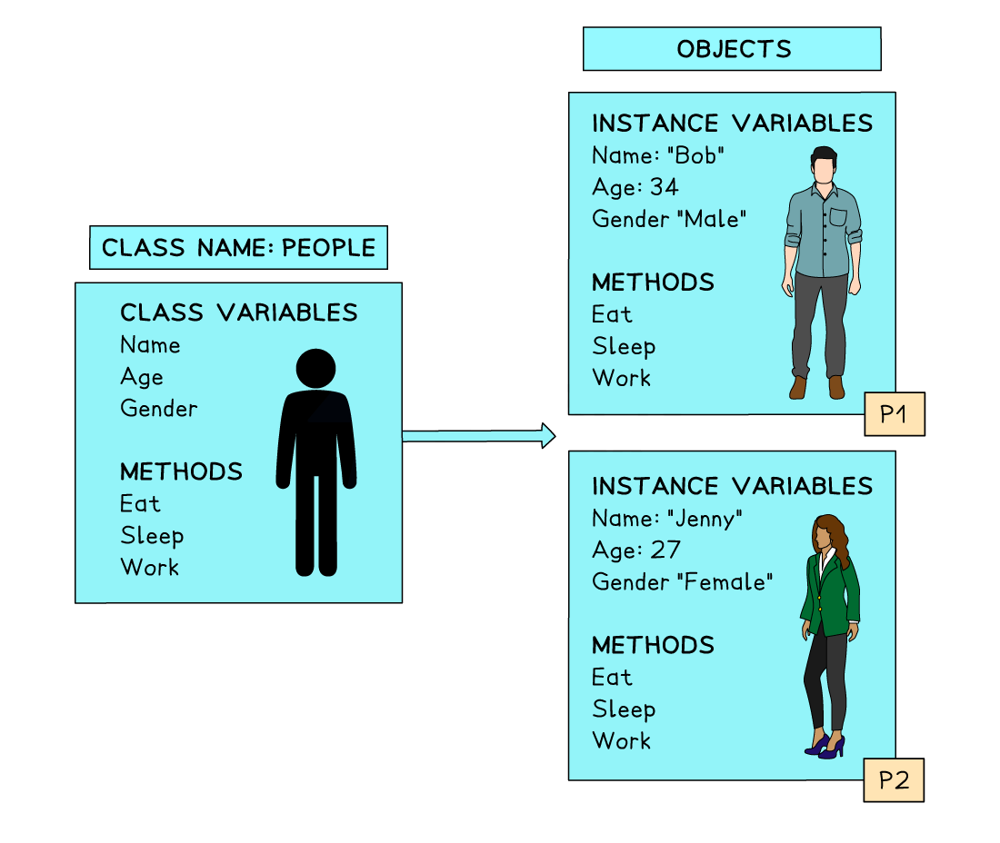
Example of a class and objects
Programming classes (OOP)
How do you program a class?
- In this example we will:
- Define a class for a car sales program where the following is required:
- Name of Manufacturer
- Model of Car
- Price
- Mileage
- Whether the car is preowned
- Define a class for a car sales program where the following is required:
- Instantiate two objects for the car sales program ensuring that they have appropriate identifiers
- List two methods that would be useful for a car object
Pseudocode
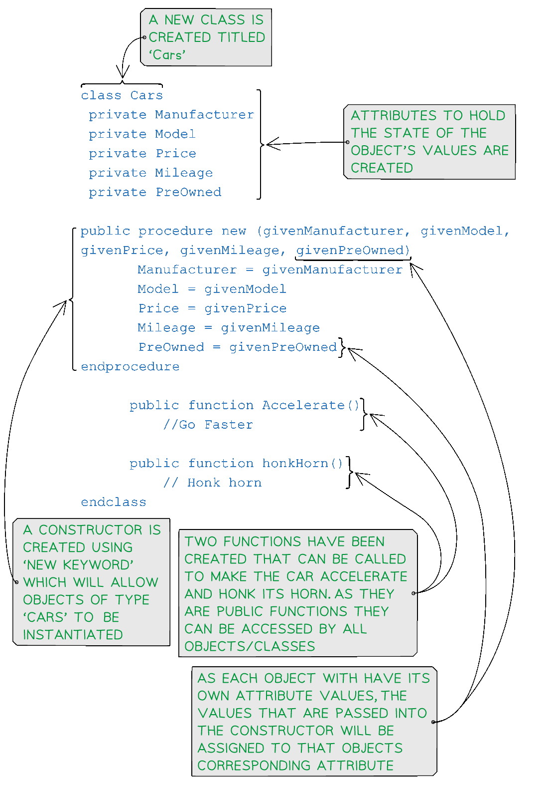
Pseudocode for creating classes, a constructor, and functionsJava
//creating a class called cars
public class Cars {
//creating class attributes for a car
private String Manufacturer;
private String Model;
private int Price;
private int Mileage;
private boolean PreOwned;
//Constructor - This is used to create the objects. More on this in the object chapter)
public Cars(String manufacturer, String model, int price, int mileage, boolean preOwned) {
this.Manufacturer = manufacturer;
this.Model = model;
this.Price = price;
this.Mileage = mileage;
this.PreOwned = preOwned;
}
//method to make the car go faster.
public void Accelerate(){
//code to be executed which will make the car go faster
}
//Method to honk horn
public void honkHorn(){
// code to be executed which will honk the car horn
}
}
Python
#creating a class called cars
class Cars:
# constructor - This is used to create the objects. More on this in the object chapter)
def __init__(self, manufacturer, model, price, mileage, preOwned):
self.Manufacturer = manufacturer
self.Model = model
self.Price = price
self.Mileage = mileage
self.PreOwned = preOwned
#method to make the car go faster.
def Accelerate(self):
# code to be executed which will make the car go faster
# method to honk horn
def honkHorn(self):
# code to be executed which will honk the car horn
A computer game is being designed that will include different vehicles. A prototype for the game is being developed using object‑oriented programming.
The class Vehicle stores data about the vehicles. Each vehicle has an identification name, a maximum speed, a current speed and a horizontal position. The value IncreaseAmount is added to the current speed each time the vehicle increases its speed.
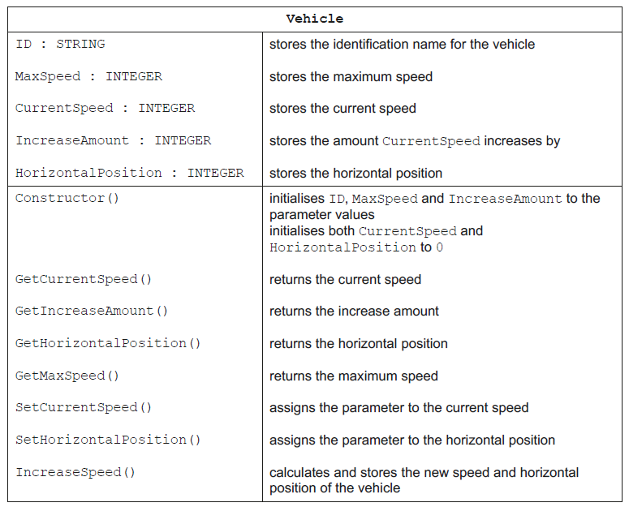
Write program code to declare the classVehicle. All attributes must be private.
You only need to declare the class and its constructor. Do not declare any other methods.
Use your programming language’s appropriate constructor.
If you are writing program code in Python, include attribute declarations using comments. [5]
Answer
- Class header (and close where appropriate) [1 mark]
- 5 (private) attribute declarations including data types [1 mark]
- Constructor header (and close where appropriate) taking 3 parameters (min) [1 mark]
- Assigning
ID, MaxSpeedandIncreaseAmountto parameters [1 mark] - Assigning
CurrentSpeedandHorizontalPositionto 0 [1 mark] Example program code: VB.NET
Class Vehicle
Private ID As String
Private MaxSpeed As Integer
Private CurrentSpeed As Integer
Private IncreaseAmount As Integer
Private HorizontalPosition As Integer
Sub New(IDP, MaxSpeedP, IncreaseAmountP)
ID = IDP
MaxSpeed = MaxSpeedP
CurrentSpeed = 0
IncreaseAmount = IncreaseAmountP
HorizontalPosition = 0
End Sub
End Class
Java
class Vehicle{
private String ID;
private Integer MaxSpeed;
private Integer CurrentSpeed;
private Integer IncreaseAmount;
private Integer HorizontalPosition;
public Vehicle(String IDP, Integer MaxSpeedP, Integer IncreaseAmountP {
ID = IDP;
MaxSpeed = MaxSpeedP;
IncreaseAmount = IncreaseAmountP;
CurrentSpeed = 0;
HorizontalPosition = 0;
}}
Python
class Vehicle:
#self.__ID string
#self.__MaxSpeed integer
#self.__CurrentSpeed integer
#self.__IncreaseAmount integer
#self.__HorizontalPosition
def __init__(self, IDP, MaxSpeedP, IncreaseAmountP):
self.__ID = IDP
self.__MaxSpeed = MaxSpeedP
self.__IncreaseAmount = IncreaseAmountP
self.__CurrentSpeed = 0
self.__HorizontalPosition = 0
Objects (OOP)
What is an object?
- An object is a representation of a real-world entity eg teacher, aeroplane, mobile phone, cat etc
- A class is like a blueprint that describes the properties and behaviours of objects, while an object is a specific instance created based on that blueprint with its own unique values for the properties
- A constructor is a special method within a class that is automatically called when an object of that class is created (instantiated)
- Constructors typically define the initial values of instance variables and perform any necessary setup to prepare the object for use
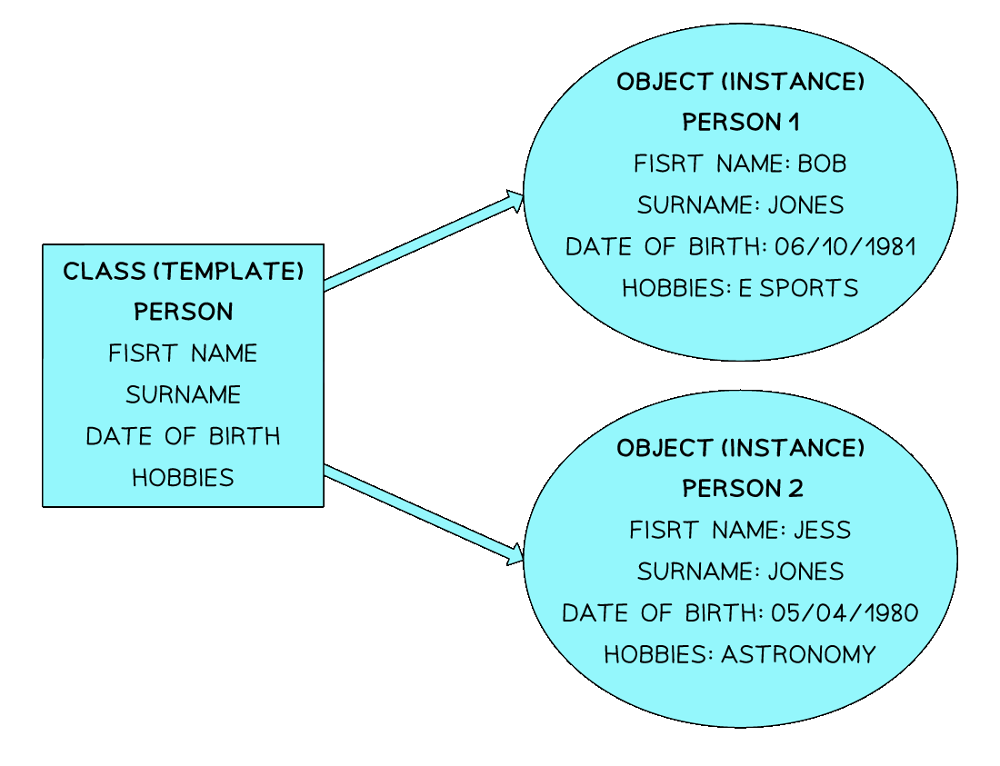
Example of 2 objects belonging to a class
Programming objects (OOP)
How do you program an object?
Pseudocode
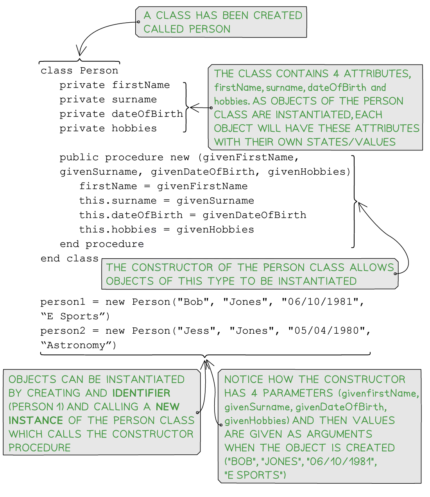
Pseudocode for the class ‘person’ and instantiating two objectsJava
//creating the person class
public class Person {
// creating 4 attributes for the person class
private String firstName;
private String surname;
private String dateOfBirth;
private String hobbies;
// Constructor -This creates objects of the person class
public Person(String firstName, String surname, String dateOfBirth, String hobbies) {
this.firstName = firstName;
this.surname = surname;
this.dateOfBirth = dateOfBirth;
this.hobbies = hobbies;
}
//Creating Objects (Instances) of the person class
Person person1 = new Person("Bob", "Jones", "06/10/1981", “E Sports”);
Person person2 = new Person("Jess", "Jones", "05/04/1980", “Astronomy”);
Python
#creating the person class
class Person:
#Constructor -This creates objects of the person class
def __init__(self, firstName, surname, dateOfBirth, hobbies):
self.firstName = firstName
self.surname = surname
self.dateOfBirth = dateOfBirth
self.hobbies = hobbies
#Creating Objects (Instances) of the person class
person1 = Person("Bob", "Jones", "06/10/1981", "E Sports")
person2 = Person("Jess", "Jones", "05/04/1980", "Astronomy")
Methods (OOP)
What is a method?
- Methods are fundamental in object-oriented programming (OOP) and are functions associated with objects or classes that define the behaviour and actions that objects can perform
- There are two main types of methods:
- A function
- A function performs a task and returns a value
- A procedure
- A procedure performs a task buts does nor return a value
- A function
- For example, there are many different types of aircraft which all differ in design, but all require a ‘take off’ and ‘landing’ method
-
An example of an aircraft class with both attributes and methods is shown below:
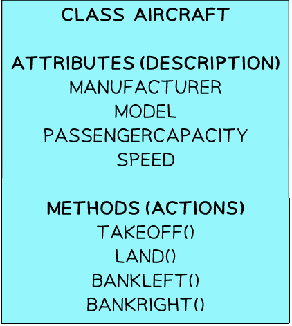
Example class for “aircraft” containing several methods -
Each object that is created from the aircraft class will have:
- A manufacturer value to determine the company that created the aircraft
- A model name for the type of aircraft
- A value for passenger capacity to determine how many people it can carry
- A speed value to determine its maximum speed
- Any objects that are created for the aircraft class also have access to the following Methods:
- A take off method to get the plane airborne
- A land method to land the plane safely
- A bank left method to allow the plane to turn to the left
- A bank right method to allow the plane to tur to the right
- As you can imagine, for an aircraft there would be many more methods that could be implemented such emergency landing and altitude cruising actions
- Once objects have been created, they can use the methods from within their class by using the dot (.) notation
- As these methods are associated with objects, they are called instance methods
- For example if an object has been created as below:
- jumboJet = new aircraft (“Boeing”, ”747”, 416, 547)
- It can use methods by doing the following:
- Objectname.Methodname:
- For example: jumboJet.Takeoff()
- Objectname.Methodname:
- In some OOP languages there are both instance methods and static methods
- Instance methods
- Instance methods are associated with individual instances (objects) of a class. They operate on the specific data and properties of an object (see above on the Jumbo Jet object example)
- Static methods
- Static methods are associated with a class itself and can be called without creating an instance (object) of the class
Public and private methods
- When declaring methods, it is important to determine how they can be accessed:
| Public Methods | Private Methods |
|---|---|
| Accessible and can be invoked by any code within the same class or from any external classes | Private methods are only accessible within the same class and cannot beinvoked by external code or other classes |
| Changes to public methods may have an impact on other parts of the codebase, so they should be carefully designed, documented, and backward compatible whenever possible | Changes to private methods have a localized impact since they are only used internally within the class, providing flexibility to modify or refactor them without affecting other parts of the program |
| Public methods are used when you want to provide access to certain functionalities or behaviours of an object or class to other parts of your program | Private methods are used when you have internal implementation details that should not be accessed or used by external code. They are meant to be used only within the class itself for organizing and managing the code internally |
- If a method does not specify the keyword public or private then its default value is set to public.
Programming methods (OOP)
How do you program a method?
Pseudocode
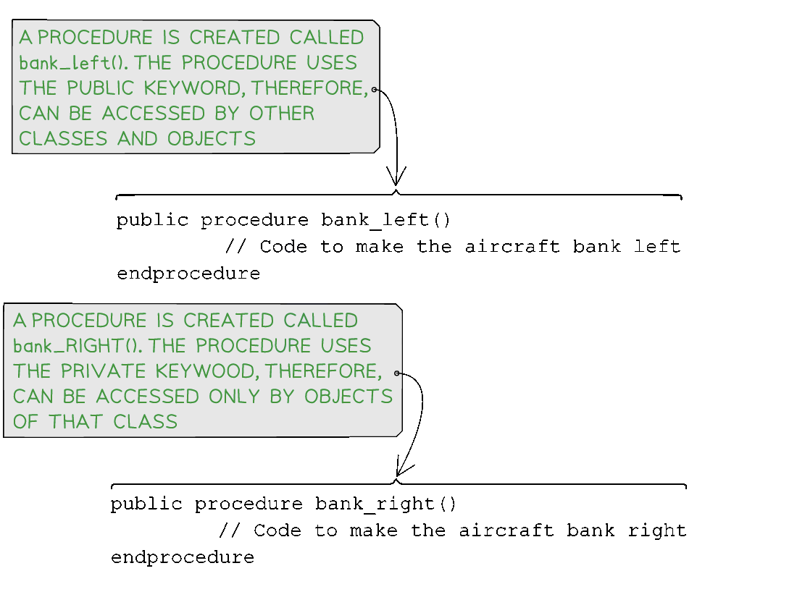
Pseudocode for creating methodsJava
//Creating a public method called BankLeft
public void bankLeft() {
// Code to make the aircraft bank left
}
//Creating a private Method called BankLeft
public void bankLeft() {
// Code to make the aircraft bank left
}
Python
#Creating a public method called BankLeft
def bank_left(self):
# Code to make the aircraft bank left
#Creating a private method called BankLeft
- In Python, there is no explicit access modifier for methods like “private” in Java
- By convention, methods with a single leading underscore _ are considered private and should not be accessed directly from outside the class
_def _bank_left(self):
# Code to make the aircraft bank left
- It’s important to note that even though the method is marked as private, it can still be accessed and invoked from outside the class
- However, as a rule, other developers should treat it as private and avoid accessing it directly
Attributes (OOP)
What is an attribute?
- In object-oriented programming (OOP), an attribute refers to a data member or a property associated with an object or a class
- They define the state of an object and can have different values for different instances of the same class
- Attributes can be of various data types, such as integers, strings, Booleans, or even other objects
- Attributes can have different access rights
- The example below shows a Car class object with an attribute called manufacturer
- It has a private access meaning that it can be accessed only by instances of the Car class
- The data that this attribute will hold must be of the String data type
-
The image below gives a visual representation of an object of this class being instantiated with a data value of “Ford”:
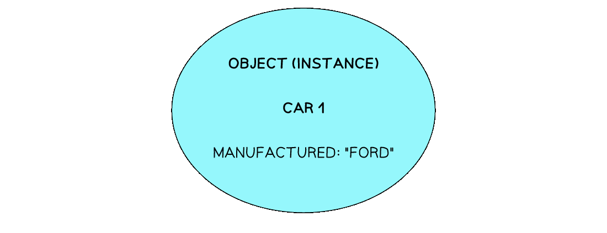
An example instance of an object -
In most cases each class has many different attributes
-
Below is an example of an object of class “person”:
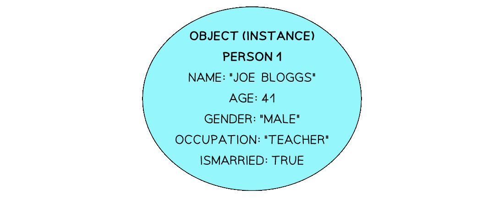
Example of an object of class “person” -
Attributes declared within methods (local variables) cannot have access modifiers because they are local to the method and have a limited scope
- Local variables are only accessible within the block or method in which they are declared. They are not part of the class’s state and cannot be accessed from other methods or classes
Programming attributes (OOP)
How do you program attributes?
Pseudocode
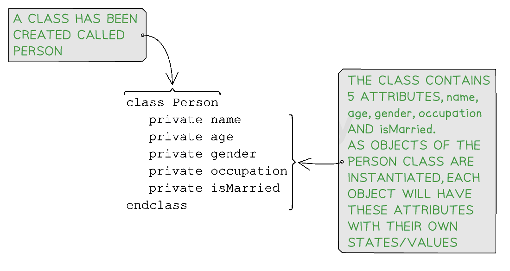
Example of a created class, “Person”, containing several attributesJava
public class Person {
// Attributes for the person class
private String name;
private int age;
private String gender;
private String occupation;
private boolean isMarried;
}
Python
- In Python attributes are defined using the
selfkeyword followed by the attribute name and its initial value
class MyClass:
def __init__(self, attribute1, attribute2):
# Define attributes
self.attribute1 = attribute1
self.attribute2 = attribute2
Inheritance (OOP)
What is inheritance?
- Inheritance is a key concept in object-oriented programming (OOP) that allows a class to inherit the properties and behaviours (methods and attributes) of another class
- Inheritance promotes code reuse by allowing derived classes to inherit and utilise the existing code from the base class. This avoids duplicating code and promotes better organization and maintainability
- Inheritance establishes an “IS-A” relationship between the base class and the derived class
- For example, if you have a base class called Vehicle and a derived class called Car, you can say that “a Car is a Vehicle.”
- The car class inherits the properties and behaviours associated with being a vehicle
-
Inheritance involves two main entities:
- The base class (also known as the parent class or superclass) and the derived class (also known as the child class or subclass)
- The derived class inherits the characteristics of the base class, meaning it can access and use the methods and attributes defined in the base class
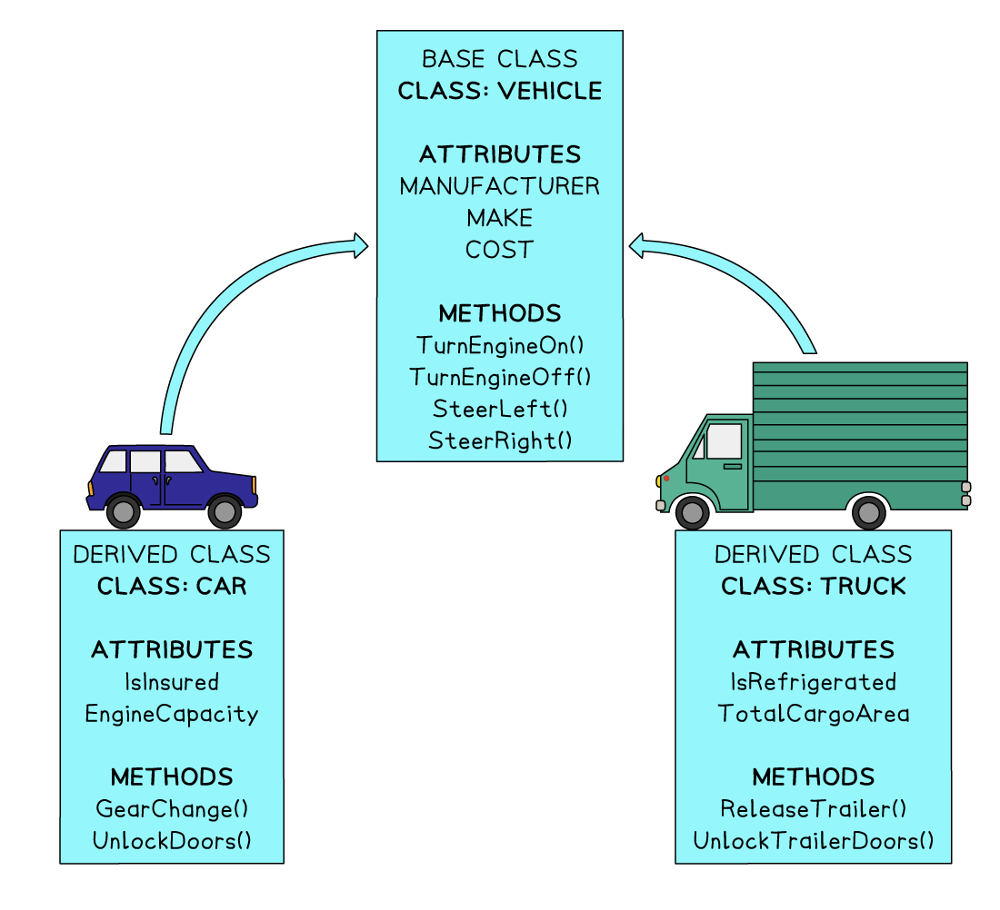
Example of a base class and derived classes
-
Base Class: The base class serves as the blueprint or template from which the derived class inherits
- It defines common properties and behaviours that can be shared among multiple derived classes
- Derived Class: The derived class inherits the attributes and methods of the base class
- It can add additional attributes and methods
- If a car object was to be created, it may have the following attributes:
- Manufacturer - The company that makes the car
- Make -The model of the car
- Cost – The price of the car to purchase
- IsInsured – Whether or not the car is insured
- EngineCapacity – The size of the engine for the car
- It may also have access to the following methods:
TurnEngineOn()– To start the car engineTurnEngineOff()– To turn off the car engineSteerLeft()– To turn the car to the leftSteerRight()– To steer the car to the leftGearChange()– To change the gear of the carUnlockDoors()– To unlock the doors to the car
- The above methods are only a select few and there could be many more added for extra functionality
- In the following code, the super keyword is used in inheritance to refer to the superclass (Base class: Vehicles) and access its members (methods, attributes, or constructors) from within the subclass (Derived Class: Cars)
Programming inheritance
How do you program inheritance?
Pseudocode
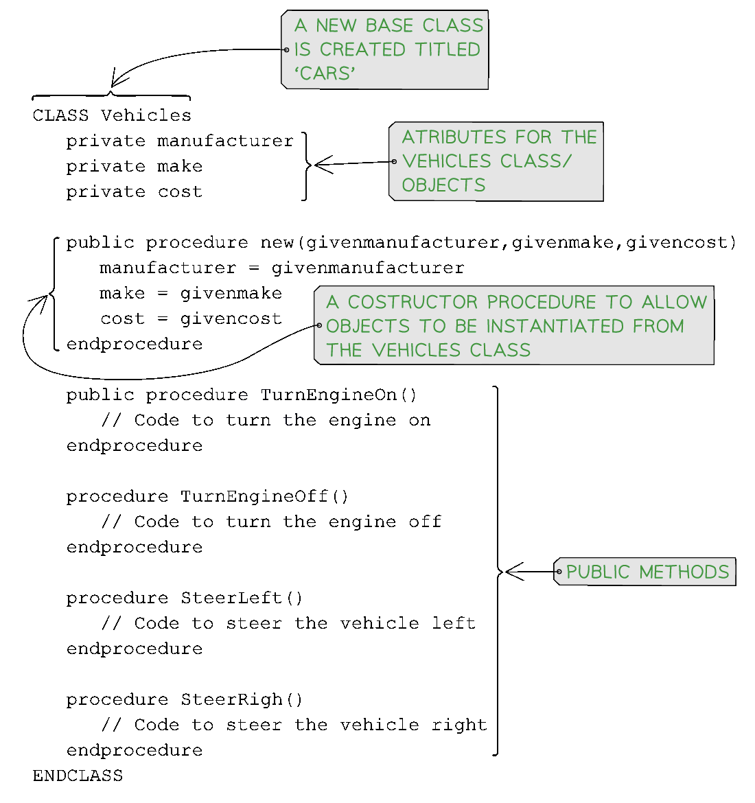
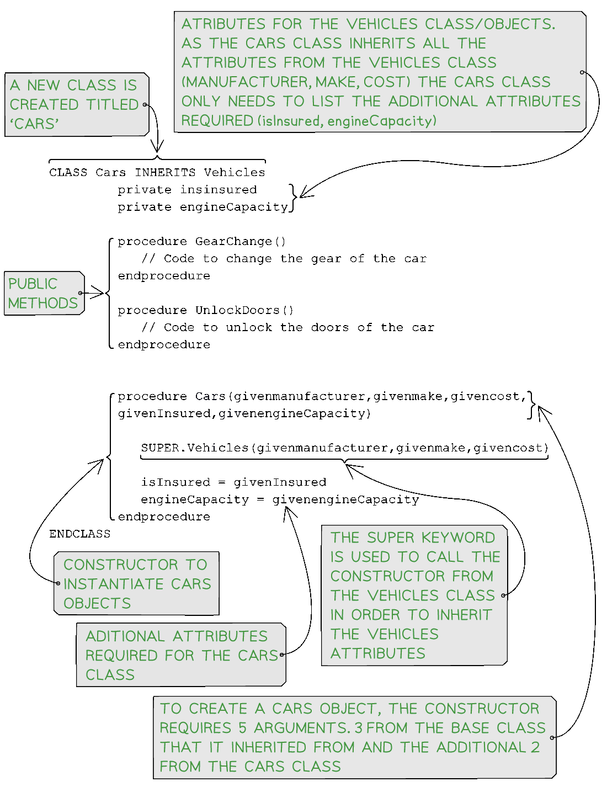
Pseudocode for a class created using inheritanceJava
//vehicle class created
public class Vehicle {
//attributes created for the vehicle class
private String manufacturer;
private String make;
private double cost;
//constructor to create objects of type vehicle
public Vehicle(String manufacturer, String make, double cost) {
this.manufacturer = manufacturer;
this.make = make;
this.cost = cost;
}
//method to start the engine of the car
public void turnEngineOn() {
//code to turn the engine on
}
//method to stop the engine of the car
public void turnEngineOff() {
//code to turn the engine off
}
//method to steer the car to the left
public void steerLeft() {
// code to steer the vehicle left
}
//method to steer the car to the right
public void steerRight() {
// code to steer the vehicle right
}
}
//Derived Class (Car)
//the Car class uses the keyword 'extends' to inherit from the Vehicle class
public class Car extends Vehicle {
private boolean isInsured;
private double engineCapacity;
// Constructor to create objects of type Car
public Car(String manufacturer, String make, double cost, boolean isInsured, double engineCapacity) {
//the super keyword is used to inherit the attributes from the base class
super(manufacturer, make, cost);
this.isInsured = isInsured;
this.engineCapacity = engineCapacity;
}
//method to change gear
public void gearChange() {
//code to change the gear of the car
}
//method to unlock the vehicle doors
public void unlockDoors() {
//code to unlock the doors of the car
}
}
Python
#Base class (Vehicle)
#Vehicle class created
class Vehicle:
#attributes created for the Vehicle class
def __init__(self, manufacturer, make, cost):
self.manufacturer = manufacturer
self.make = make
self.cost = cost
#method to start the engine of the car
def turn_engine_on(self):
# Code to turn the engine on
#method to stop the engine of the car
def turn_engine_off(self):
# Code to turn the engine off
#method to steer the car to the left
def steer_left(self):
# Code to steer the vehicle left
#method to steer the car to the right
def steer_right(self):
# Code to steer the vehicle right
#Derived Class (Car)
#the Car class uses the keyword parent class name in parenthesis to inherit from the Vehicle class
class Car(Vehicle):
def __init__(self, manufacturer, make, cost, is_insured, engine_capacity):
#the super keyword is used to inherit the attributes from the base class
super().__init__(manufacturer, make, cost)
self.is_insured = is_insured
self.engine_capacity = engine_capacity
#method to change gear
def gear_change(self):
# Code to change the gear of the car
#method to steer the car to the right
def unlock_doors(self):
# Code to unlock the doors of the car
The child class Helicopter inherits from the parent class Vehicle. A helicopter also has a vertical position and changes the vertical position when it increases speed.
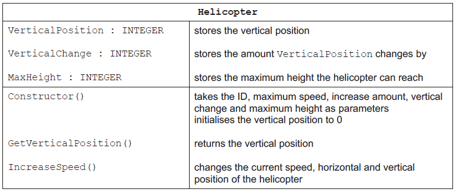
Write program code to declare the classHelicopter. You only need to declare the class and its constructor. You do not need to declare the other methods.
Use your programming language’s appropriate constructor.
All attributes must be private.
If you are writing in Python, include attribute declarations using comments. [5]
Answer
- Class header (and end where appropriate) inheriting from Vehicle [1 mark]
- 3 (private) attribute declarations with data types [1 mark]
- Constructor (and end where appropriate) with (min) 5 parameters [1 mark]
- Calling parent constructor with appropriate parameters [1 mark]
- Initialising
VerticalPositionto 0 andVerticalChangeandMaxHeightto attributes [1 mark] Example program code: VB.NET
Class Helicopter
Inherits Vehicle
Private VerticalPosition As Integer
Private VerticalChange As Integer
Private MaxHeight As Integer
Sub New(IDP, MaxSpeedP, IncreaseAmountP, VertChangeP, MaxHeightP)
MyBase.New(IDP, MaxSpeedP, IncreaseAmountP)
VerticalPosition = 0
VerticalChange = VertChangeP
MaxHeight = MaxHeightP
End Sub
End Class
Java
class Helicopter extends Vehicle{
private Integer VerticalPosition;
private Integer VerticalChange;
private Integer MaxHeight;
public Helicopter(String IDP, Integer MaxSpeedP, Integer IncreaseAmountP, Integer VertChangeP, Integer MaxHeightP){
super(IDP, MaxSpeedP, IncreaseAmountP);
VerticalPosition = 0;
VerticalChange = VertChangeP;
MaxHeight = MaxHeightP;
}}
Python
class Helicopter(Vehicle):
#VerticalPosition Integer
#VerticalChange Integer
#MaxHeight Integer
def __init__(self, IDP, MaxSpeedP, IncreaseAmountP, VertChangeP, MaxHeightP):
Vehicle.__init__(self,IDP, MaxSpeedP, IncreaseAmountP)
self.__VerticalPosition = 0
self.__VerticalChange = VertChangeP
self.__MaxHeight = MaxHeightP
Encapsulation (OOP)
What is encapsulation?
- In A Level Computer Science, encapsulation refers to the practice of grouping data (attributes) and methods (functions) within a class
- Using encapsulation ensures that data remains secure and is not accidentally modified or misused by controlling access to them using access modifiers (e.g., public, private)
- It also helps to organize code by keeping related data and methods together within an object
- Encapsulation promotes code reusability, which means the same object or class can be used in different parts of a program without rewriting the code
- Encapsulation uses a concept called “Abstraction” which reduces complexity by hiding the implementation details of the object, making it easier to understand and work with
- Programmers can use methods and classes from other parts of the program without having to understand how that it has been constructed internally
Encapsulation in classes
- Private variables are only accessible within the class itself, and external code cannot access them directly.
- Encapsulation hides how things work inside a class from the outside. External code can interact with the class using public methods without needing to understand its internal details
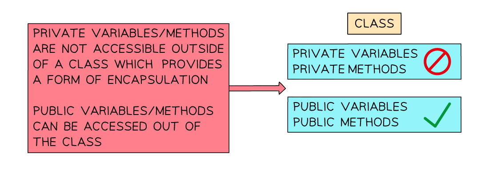
Encapsulation in classes
Encapsulation in methods
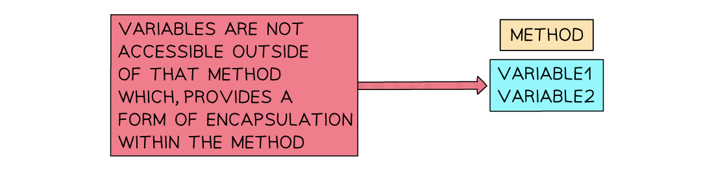
Encapsulation in methods- When determining whether a method or attribute is public or private, if neither keyword appears, then assume it is public
Programming encapsulation (OOP)
What is a get method?
- The “get” method is a common naming convention for a type of method that is used to retrieve the value of an object’s private attributes (instance variables)
- These methods are also known as “getter” methods or “accessor” methods
- The main purpose of a get method is to provide controlled access to the internal state (data) of an object without allowing direct modification
- Attributes are often declared as private to achieve encapsulation, so cannot be accessed directly from outside the class
- External code can use the public get methods to read the values of these private attributes (also known as instance variables)
Pseudocode
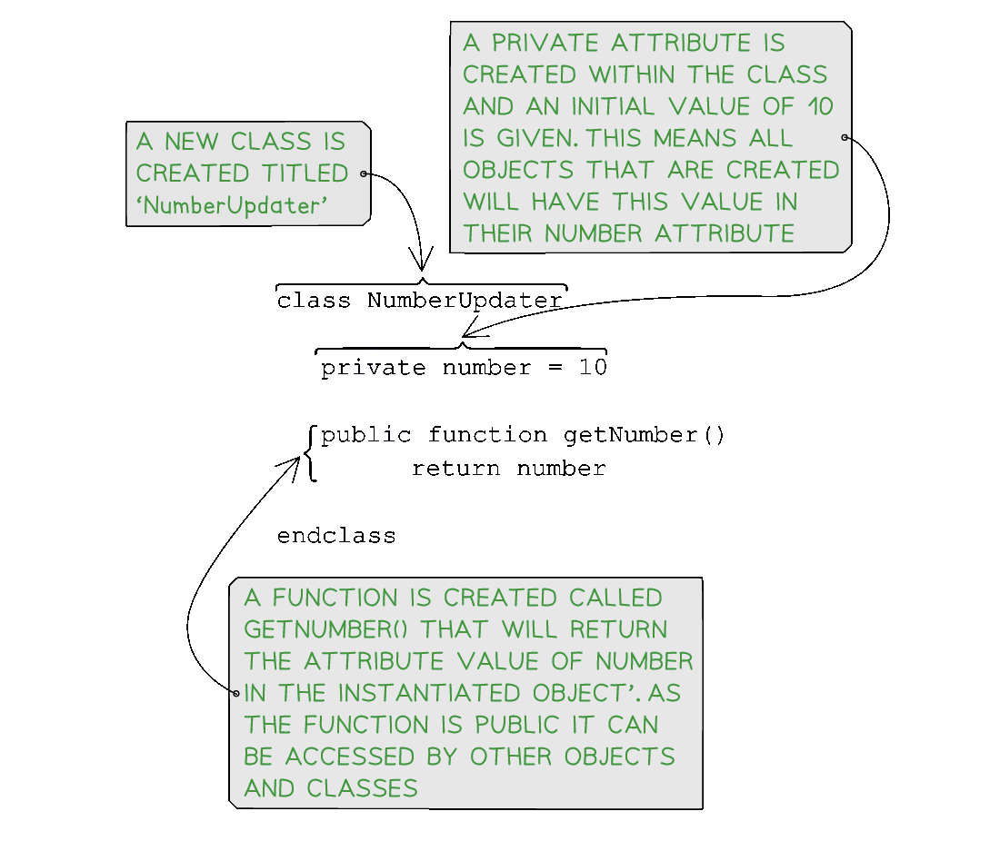
Pseudocode for a get methodJava
//creating a class called NumberUpdater
public class NumberUpdater {
//setting the private attribute to the value of 10
private int number = 10;
//creating a get method that will return the value store in the number attribute
public int getNumber() {
return number;
}
}
Python
#creating a class called NumberUpdater
class NumberUpdater:
#setting the private attribute to the value of 10
def __init__(self):
self.__number = 10
#creating a get method that will return the value stored in the number attribute
@property
def number(self):
return self.__number
What is a set method?
- The “set” method is a common naming convention for a type of method that is used to set the value of object’s private instance variables
- Setter methods, also known as “setter” methods or “mutator” methods
- Generally additional code is written within the method to allow controlled access by enforcing certain conditions or validations before updating the attribute
Pseudocode
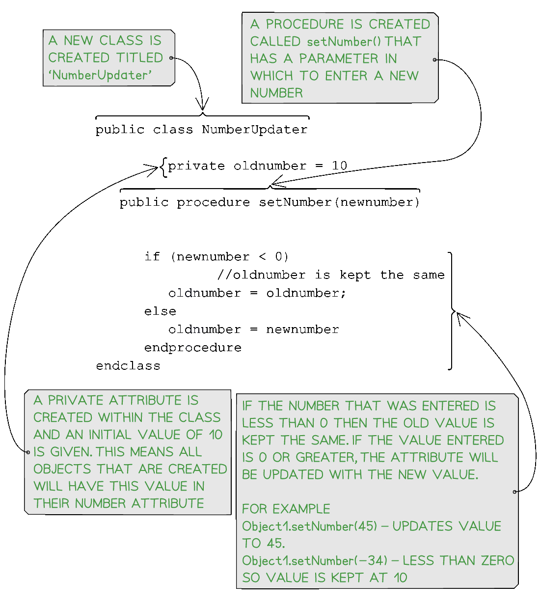
Pseudocode for a “setter” methodJava
//creating a class called NumberUpdater
public class NumberUpdater
//setting attribute value to 10
private int oldnumber = 10;
//creating a set method
public void setNumber(int newnumber) {
//if the new number is less than zero
if (newnumber < 0) {
//oldnumber is kept the same
oldnumber = oldnumber;
} else {
//oldnumber is updated with the new number value
oldnumber = newnumber;
}
}
}
Python
//creating a class called NumberUpdater
class NumberUpdater:
//setting attribute value to 10
def __init__(self):
self.__oldnumber = 10
//creating a set method
def setNumber(self, newnumber):
//if the new number is less than zero
if newnumber < 0:
//oldnumber is kept the same
self.__oldnumber = self.__oldnumber
else:
//oldnumber is updated with the new number value
self.__oldnumber = newnumber
A computer game is being designed that will include different vehicles. A prototype for the game is being developed using object‑oriented programming.
The class Vehicle stores data about the vehicles. Each vehicle has an identification name, a maximum speed, a current speed and a horizontal position. The value IncreaseAmount is added to the current speed each time the vehicle increases its speed.
Write program code for the get methods GetCurrentSpeed(),
GetIncreaseAmount(), GetMaxSpeed() and GetHorizontalPosition() [3]
Answer
- 1 get function header (and end where appropriate) with no parameter … [1 mark]
- …returning attribute (without overwriting) [1 mark]
- 3 further correct get methods [1 mark] Example program code: VB.NET
Function GetCurrentSpeed()
Return CurrentSpeed
End Function
Function GetIncreaseAmount()
Return IncreaseAmount
End Function
Function GetHorizontalPosition()
Return HorizontalPosition
End Function
Function GetMaxSpeed()
Return MaxSpeed
End Function
Java
public Integer GetCurrentSpeed(){
return CurrentSpeed;
}
public Integer GetIncreaseAmount(){
return IncreaseAmount;
}
public Integer GetHorizontalPosition(){
return HorizontalPosition;
}
public Integer GetMaxSpeed(){
return MaxSpeed;
}
Python
def GetCurrentSpeed(self):
return self.__CurrentSpeed
def GetIncreaseAmount(self):
return self.__IncreaseAmount
def GetHorizontalPosition(self):
return self.__HorizontalPosition
def GetMaxSpeed(self):
return self.__MaxSpeed
Polymorphism (OOP)
What is polymorphism?
- In A Level Computer Science, polymorphism is a concept in programming that allows objects to take on different forms or behaviours
- Different objects can share the same name or behaviour but can work in different ways
- It helps make code more flexible, reusable, and easier to maintain
- It allows flexibility and reusability in programming, making it easier to write and manage code
-
Objects can be treated as belonging to a common group, even if they belong to different classes, making your code more versatile and adaptable to changes
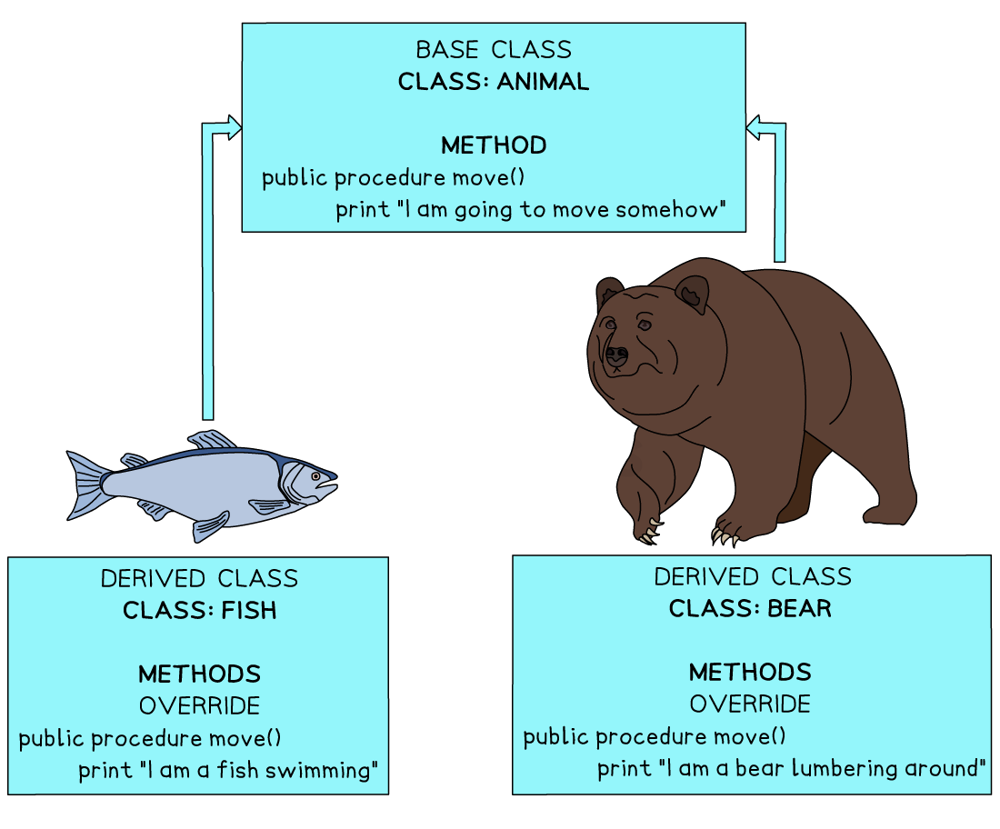
Method Overloading Example 1 -
In the example above, all three classes all have a method named
move(). Polymorphism allows methods to be declared with the same name but execute different code (in this case printing different messages) -
The override keyword Is used to provide a new implementation for a method that is already defined in the parent class (base class)
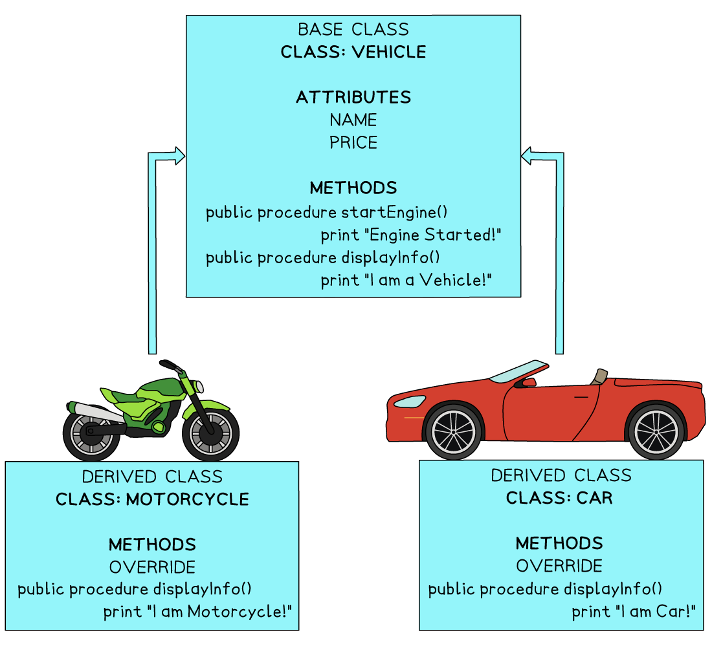
Method Overloading Example 2 -
In the above example both the Motorcycle class and the Car class both inherit from the base class ‘Cars’
- Objects from the Motorcycle Class and the Car class can call the
startEngines()method which will output"Engines Started!" - If either of the object types call the
displayInfo()method, the program will execute the method from the objects class as it overrides the Vehicle class method - For example
- If a motorcycle object calls the
displayInfo()method,"I am a Motorcycle!"will be output - If a Car object calls the
displayInfo()method,"I am a Car!"will be output
- If a motorcycle object calls the
Treating objects as common groups
- Polymorphism also allows objects of different classes to be treated as objects of a common superclass or base class
- For example:
Vehicle vehicle1 = new Car()Vehicle vehicle2 = new Motorcycle()
- This allows an array of type Vehicle to store both Motorcycle and Car objects rather than in separate data structures
- If the
vehicle1.displayInfo()method is called, it will still output “I am a Car!” - If the
vehicle2.displayInfo()method is called, it will still output “I am a Motorcycle!”
- If the
- This flexibility provided by polymorphism are essential for creating more maintainable and modular code
Programming polymorphism (OOP)
How do you program polymorphism?
Run-time polymorphism
- This happens when a subclass overrides a method defined in a superclass, and the correct version is chosen at run-time, not compile-time
Example scenario: Animal, dog, and cat
Step-by-step logic (pseudocode)
- Define a superclass called
Animalwith a methodspeak()that does nothing - Create subclasses called
DogandCatthat inherit fromAnimal - In each subclass, override the
speak()method to provide a specific output - Write a function
make_sound(animal)that accepts an object of typeAnimaland calls itsspeak()method - Create instances of
DogandCat, and pass them tomake_sound()
CLASS Animal
METHOD speak()
// Empty method (acts as a placeholder)
CLASS Dog EXTENDS Animal
METHOD speak()
OUTPUT "Woof"
CLASS Cat EXTENDS Animal
METHOD speak()
OUTPUT "Meow"
PROCEDURE make_sound(animal : Animal)
CALL animal.speak()
// Create objects
DECLARE myDog : Dog
DECLARE myCat : Cat
SET myDog TO NEW Dog()
SET myCat TO NEW Cat()
// Demonstrate polymorphism
CALL make_sound(myDog) // Outputs: Woof
CALL make_sound(myCat) // Outputs: Meow
Animalis a base class with aspeak()methodDogandCatare subclasses that override thespeak()methodmake_sound()takes anAnimalobject but calls the correct version ofspeak()depending on whether it’s aDogor aCat- This demonstrates run-time polymorphism – the method call is resolved based on the actual type of the object
Python
class Animal:
def speak(self):
pass # Placeholder method
class Dog(Animal):
def speak(self):
print("Woof")
class Cat(Animal):
def speak(self):
print("Meow")
def make_sound(animal):
animal.speak()
dog = Dog()
cat = Cat()
make_sound(dog) # Outputs: Woof
make_sound(cat) # Outputs: Meow
- This shows method overriding
- The
make_sound()function relies on dynamic method binding
Java
class Animal {
public void speak() {
// Empty default method
}
}
class Dog extends Animal {
@Override
public void speak() {
System.out.println("Woof");
}
}
class Cat extends Animal {
@Override
public void speak() {
System.out.println("Meow");
}
}
public class Main {
public static void makeSound(Animal animal) {
animal.speak();
}
public static void main(String[] args) {
Dog dog = new Dog();
Cat cat = new Cat();
makeSound(dog); // Outputs: Woof
makeSound(cat); // Outputs: Meow
}
}
- Recognise use of a superclass reference (
Animal animal) pointing to a subclass object - Polymorphism occurs when
animal.speak()dynamically calls the correct overridden method
The child class Helicopter inherits from the parent class Vehicle. A helicopter also has a vertical position and changes the vertical position when it increases speed.
The Helicopter method IncreaseSpeed() overrides the method from the parent
class and:
- adds the amount of vertical change to the vertical position
- adds
IncreaseAmountto the current speed -
adds the updated current speed to the horizontal position. The vertical position of a helicopter cannot exceed its maximum height. The current speed of a helicopter cannot exceed its maximum speed. Write program code for the method
IncreaseSpeed()[4] Answer -
Method header (overriding where required) with no parameter [1 mark]
- Adding vertical change to vertical position … [1 mark]
- …limiting to maximum height [1 mark]
- Repeating/calling/using the code from original for horizontal increase (in every case) [1 mark] Example program code: VB.NET
Overrides Sub IncreaseSpeed()
VerticalPosition = VerticalPosition + VerticalChange
If VerticalPosition > MaxHeight Then
VerticalPosition = MaxHeight
End If
Me.SetCurrentSpeed(GetCurrentSpeed() + GetIncreaseAmount())
If Me.GetCurrentSpeed() > Me.GetMaxSpeed() Then
Me.SetCurrentSpeed(Me.GetMaxSpeed())
End If
Me.SetHorizontalPosition(Me.GetHorizontalPosition() + Me.GetCurrentSpeed())
End Sub
Java
public void IncreaseSpeed(){
VerticalPosition = VerticalPosition + VerticalChange;
if(VerticalPosition > MaxHeight){
VerticalPosition = MaxHeight;
}
super.SetCurrentSpeed(super.GetCurrentSpeed() + super.GetIncreaseAmount());
if(super.GetCurrentSpeed() > super.GetMaxSpeed()){
super.SetCurrentSpeed(super.GetMaxSpeed());
}
super.SetHorizontalPosition(super.GetHorizontalPosition() + super.GetCurrentSpeed());
}
Python
def IncreaseSpeed(self):
self.__VerticalPosition = self.__VerticalPosition + self.__VerticalChange
if(self.__VerticalPosition > self.__MaxHeight):
self.__VerticalPosition = MaxHeight
Vehicle.SetCurrentSpeed(self, Vehicle.GetCurrentSpeed(self) +
Vehicle.GetIncreaseAmount(self))
if(Vehicle.GetCurrentSpeed(self) > Vehicle.GetMaxSpeed(self)):
Vehicle.SetCurrentSpeed(self, Vehicle.GetMaxSpeed(self));
Vehicle.SetHorizontalPosition(self, Vehicle.GetHorizontalPosition(self) +
Vehicle.GetCurrentSpeed(self))